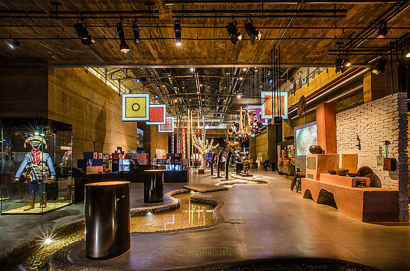

Conheça outros pontos turísticos do Recife Antigo
Centro Cultural Cais do Sertão
O museu e centro cultural do Cais do Sertão é uma visita mais do que interativa é um mergulho na cultura nordestina! O Cais do Sertão fica instalado no antigo Armazém 10 do Porto de Recife e homenageia muito bem a obra de Luiz Gonzaga. É um espaço focado na rica cultura popular do nordeste brasileiro e conta com exposições, réplicas de casas do sertão, filmes, instalações, salas de música, o museu transborda cultura.
Parque das Esculturas Francisco Brennand
 Aproveite que você está na praça Praça do Marco Zero e atravesse em barquinho rumo ao Parque das Esculturas Francisco Brennand. O parque foi construído em 2000 e conta com 90 esculturas do artista pernambucano Francisco Brennand, sendo a Coluna de Cristal, com 32 metros de altura, a principal obra no complexo. O trajeto dura uns 2 minutinhos. Em menos de 1 hora você visita a exposição a céu aberto e segue o seu roteiro pelo Recife Antigo.
Aproveite que você está na praça Praça do Marco Zero e atravesse em barquinho rumo ao Parque das Esculturas Francisco Brennand. O parque foi construído em 2000 e conta com 90 esculturas do artista pernambucano Francisco Brennand, sendo a Coluna de Cristal, com 32 metros de altura, a principal obra no complexo. O trajeto dura uns 2 minutinhos. Em menos de 1 hora você visita a exposição a céu aberto e segue o seu roteiro pelo Recife Antigo.